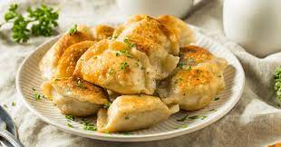

Pierogies

Description
This recipe is for classic grandma-style pierogies, a traditional dish that originated in Eastern Europe. The recipe includes instructions for making the dough from scratch as well as the potato filling
To make the dough, all-purpose flour, salt, egg, sour cream, butter, and warm water are mixed together to form a dough. The dough is kneaded for several minutes, then wrapped in plastic wrap and allowed to rest for 30 minutes.
For the filling, potatoes are boiled and mashed, then mixed with chopped onion, butter, salt, and pepper. Shredded cheese can also be added for extra flavor.
The dough is then rolled out on a floured surface and cut into circles. A spoonful of filling is placed in the center of each circle, then folded in half to form a half-moon shape. The edges are pressed firmly together to seal the pierogies.
The pierogies are boiled in salted water for about 5-6 minutes until they float to the surface, then removed and drained. They are then fried in butter until golden brown and crispy on both sides.
The pierogies can be served hot with sour cream and chopped green onions for garnish. The resulting pierogies are tender and flavorful, with a delicious potato and onion filling. This recipe is perfect for a cozy family dinner or a special occasion.
Ingredients:
Dough Ingredients
- 3 cups all-purpose flour
- 1 tsp salt
- 1 large egg
- 1 cup sour cream
- 1/4 cup unsalted butter, softened
- 1/2 cup warm water
Filling Ingredients
- 4 large potatoes, peeled and diced
- 1 small onion, finely chopped
- 1/2 cup unsalted butter, softened
- Salt and pepper to taste
- 1/2 cup shredded cheddar cheese (optional)
Steps
- In a large mixing bowl, whisk together the flour and salt until well combined. Make a well in the center of the mixture.
- In a separate mixing bowl, whisk together the egg, sour cream, and butter until smooth.
- Pour the wet ingredients into the well of the dry ingredients, and mix until a dough forms. Gradually add the warm water, a little at a time, until the dough comes together in a ball.
- Knead the dough on a lightly floured surface for 5-7 minutes, or until smooth and elastic. Wrap the dough in plastic wrap and let it rest for 30 minutes.
- Meanwhile, prepare the filling. Boil the potatoes until they are tender, then drain and mash them with a potato masher. Add the chopped onion, butter, salt, and pepper, and mix until well combined. Add shredded cheese, if desired.
- On a floured surface, roll out the dough to a thickness of about 1/8 inch. Cut circles of dough using a biscuit cutter or a glass.
- Place a spoonful of filling in the center of each dough circle, then fold the circle in half to form a half-moon shape. Press the edges together firmly to seal.
- Bring a large pot of salted water to a boil. Add the pierogies, a few at a time, and cook for about 5-6 minutes, or until they float to the surface. Remove with a slotted spoon and drain.
- Melt some butter in a frying pan over medium heat. Add the cooked pierogies and fry until golden brown and crispy on both sides.
- Serve hot with sour cream and chopped green onions, if desired.